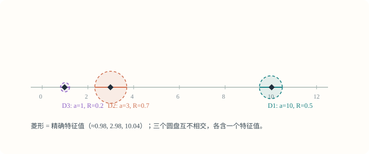
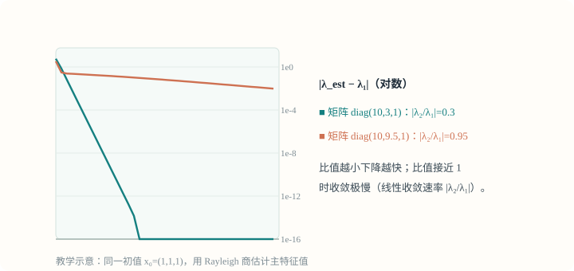

CHAPTER 23 · NUMERICAL ANALYSIS
矩阵特征值计算：圆盘定理、幂法与反幂法
前几章都在“解方程”。从这一章开始换一种问法：矩阵到底把空间拉伸成什么样？特征值与特征向量就是答案。它是数值分析里最优雅的一支，也是唯一一支在 n≥5 后只能迭代、没有通解公式的问题。
01 · 特征值问题
输入：方阵 A∈ℝⁿˣⁿ。输出：特征值 λ 与对应的非零特征向量 v，满足 Av=λv。假设：求单个主特征值时要求它是单的（与其余特征值模不等）；某些结论（如 Rayleigh 商的二次精度、RQI 的三次收敛）需要 A 对称。
几何上，特征向量是被 A 作用后方向不变、只被伸缩的特殊方向，伸缩倍数就是特征值。把所有特征向量“摆正”，就相当于找到矩阵真正沿哪几个轴在拉伸空间——这就是“矩阵长什么样”的答案。
为什么必须用迭代法？把 Av=λv 写成 (A−λI)v=0，有非零解当且仅当 det(A−λI)=0，这是一个 n 次特征多项式。而 Abel–Ruffini 定理告诉我们：五次及以上多项式没有通用根式解。所以当 n≥5 时，任何特征值算法本质上都是迭代的——这从根上区别于解线性方程组（有 O(n³) 的直接法）。
02 · Gerschgorin 圆盘
在真正计算前，先拿一个几乎免费的定性工具把特征值圈起来。对每个 i，以对角元 aᵢᵢ 为圆心、以该行非对角元素绝对值之和 Rᵢ 为半径，画一个圆盘：
定理说：A 的全部特征值都落在这些圆盘的并集里。把 A 转置再画一次（相当于按列求和），特征值又同时落在列圆盘的并集里，所以实际位置在两者的交集内，往往更紧。
更有用的是计数推论：若有 k 个圆盘连成一片、且与其他圆盘不连通，那么这一片里恰好包含 k 个特征值（按代数重数计）。只要圆盘互相分离，就能逐个“定位”特征值。图 1 给了一个三个圆盘互不相交的例子。

A=[[10, 0.5, 0], [0.5, 3, 0.2], [0, 0.2, 1]] 的行圆盘。R=[0.5, 0.7, 0.2]，三个圆盘 [9.5,10.5]、[2.3,3.7]、[0.8,1.2] 互不相交；精确特征值为 0.9799、2.9845、10.0356（菱形，由对称矩阵的 Jacobi 方法算出），各落在对应的一个圆盘内——印证了计数推论“每个连通片恰含一个特征值”。03 · 幂法与 Rayleigh 商
幂法求模最大的特征值，思想极简：反复用 A 乘向量并归一化。
把初值按特征向量展开 x₀=Σcᵢvᵢ，则 Aᵏx₀=Σcᵢλᵢᵏvᵢ。提取 λ₁ᵏ 后，其余项都带因子 (λᵢ/λ₁)ᵏ，模小于 1、逐步消失，主特征方向就浮现出来。所以收敛率就是 |λ₂/λ₁|：比值越小越快，越接近 1 越慢。
得到近似特征向量后，用 Rayleigh 商估计特征值：
Rayleigh 商有一个漂亮性质：对对称矩阵，若特征向量有 O(ε) 的误差，则 Rayleigh 商的误差只有 O(ε²)——它把精度“平方”了。但这条性质依赖对称性；非对称矩阵下误差仍是一阶的，不能盲目相信。

|λ₂/λ₁| 控制。矩阵 diag(10,3,1)（青，比值 0.3）约 14 步达 10⁻¹²；diag(10,9.5,1)（橙，比值 0.95）在 40 步内几乎不动，需上百步才到 10⁻⁶。数据为本文教学演示的真实迭代值。04 · 反幂法与平移
幂法只能拿到模最大的特征值。若 A 可逆，则 A⁻¹ 的特征值是 1/λ；对 A⁻¹ 用幂法，就收敛到 1/λ 最大、即 λ 模最小的那个——这就是反幂法。实际计算中不求逆，而是每次解 A y=x_k；先做一次 LU 分解，之后每步只回代。
关键升级是原点平移：对 (A−σI)⁻¹ 用幂法，收敛到离 σ 最近的特征值。因为 (A−σI) 的特征值是 λ−σ，其倒数模最大者对应 λ 最靠近 σ。这使得我们可以“指定”要哪个特征值——只需把 σ 放在它附近。收敛率变为 |(λ_近−σ)/(λ_次近−σ)|，把 σ 取到很近时收敛极快。
Rayleigh 商迭代（RQI） 把平移量取成当前的 Rayleigh 商 σ_k=(x_kᵀAx_k)/(x_kᵀx_k)，每步解 (A−σ_kI)y=x_k。平移量越来越准，所以收敛也越快：对对称矩阵，RQI 是三阶（立方）收敛（误差每步大约从 ε 变到 ε³）；对一般非对称矩阵则只保证二次。代价是每步平移都不同，需要重新分解线性系统。
05 · 失败边界
幂法/反幂法都很短，但每一条假设都有反例：
| 场景 | 原因 | 表现 | 对策 |
|---|---|---|---|
| 模最大特征值不唯一 | |λ₁|=|λ₂|（如共轭对） | 幂法不收敛、向量旋转 | 改用 QR 方法或复杂平移 |
| 初值与主向量正交 | c₁=0，主分量从不出现 | 永不收敛到 λ₁ | 随机初值；舍入通常能打破正交 |
|λ₂/λ₁|→1 | 谱间隔很小 | 线性收敛极慢（图 2） | 平移/加速、或换方法 |
| 对称性误判 | 非对称却用 O(ε²) 性质 | 高估精度 | 确认 A=Aᵀ 再依赖二次精度 |
| 平移撞上特征值 | A−σI 奇异 | 线性系统不可解 | 微小扰动 σ，或改用 QR |
还有一个容易混淆的点：Gerschgorin 圆盘的范围 ≠ 收敛速度的保证。圆盘很远不代表迭代快，圆盘很紧也不代表就好算；真正决定幂法快慢的是模的间隔 |λ₂/λ₁|，与圆盘半径没有直接关系。
06 · 实验与选型
固定主特征值 λ₁=10，只改次特征值 λ₂，看幂法要多少步把 Rayleigh 商推到 10。选择比值观察：
失败边界（可验证）：第一，主特征值必须是单的，否则幂法不收敛；第二，初值不能恰好与主向量正交；第三，|λ₂/λ₁|≤1 越接近 1 收敛越慢，这是幂法的根本限制，不是代码 bug。下面的确定性实验把这三件事变成断言：
import math
def power_diag(lam, x0, tol=1e-12, nmax=500):
"""对对角矩阵 diag(lam) 跑幂法，返回 (Rayleigh商, 迭代步数)"""
n = len(lam)
nrm = lambda v: math.sqrt(sum(c*c for c in v))
x = [c / nrm(x0) for c in x0]
for k in range(1, nmax+1):
y = [lam[i]*x[i] for i in range(n)]
est = sum(x[i]*lam[i]*x[i] for i in range(n)) # Rayleigh 商
x = [c / nrm(y) for c in y]
if abs(est - lam[0]) < tol:
return est, k
return est, None
# 1) 比值 0.3：14 步达 1e-12
_, k_fast = power_diag([10, 3, 1], [1, 1, 1])
assert k_fast <= 15
# 2) 比值 0.95：约 264 步才达 1e-12（远慢于 14 步）
_, k_slow = power_diag([10, 9.5, 1], [1, 1, 1])
assert k_slow is not None and k_slow > 200
# 3) 初值与主向量正交：c1=0，主分量从不出现
_, k_orth = power_diag([10, 3, 1], [0, 1, 0])
assert k_orth is None # 收敛到 λ₂=3，而不是 λ₁=10
print("ratio .3:", k_fast, "| ratio .95:", k_slow, "| orthogonal:", k_orth)这段纯 Python 实验（不依赖任何第三方库）同时验证了：比值小则幂法快（14 步）；比值 0.95 时需约 264 步，几乎慢一个数量级；初值与主向量正交时根本看不到主分量，反而收敛到次特征值 λ₂=3。带平移的反幂法与 RQI 就是为绕开后两个陷阱而生。
| 方法 | 目标 | 每步计算 | 收敛 |
|---|---|---|---|
| 幂法 | 模最大特征值 | 一次 Av | 线性，速率 |λ₂/λ₁| |
| 带平移反幂法 | 最接近 σ 的特征值 | 一次线性解（LU 后回代） | 线性，速率由临近比值定 |
| Rayleigh 商迭代 | 对称矩阵某特征值 | 每步一次线性求解 | 三阶（非对称则二阶） |
| QR 方法（下章） | 全部特征值 | 迭代相似变换 | 整体迭代 |
原始资料与延伸阅读
本章将已知结论与本文独立构造的数值示例区分开：Gerschgorin 定理、幂法收敛率 |λ₂/λ₁|、对对称矩阵 Rayleigh 商的 O(ε²) 精度与 RQI 的三阶收敛均为理论结果；图 1、图 2 与实验中的迭代值、步数均为本文教学演示（已简化）。
- Gene Golub & Charles Van Loan, Matrix Computations, 4th ed., Johns Hopkins University Press, 2013。第 7–8 章系统介绍 Gerschgorin 圆盘、幂法、反幂法、RQI 与 QR 方法。
- NumPy · numpy.linalg.eigvals：基于 LAPACK
geev的特征值参考实现，用于对照本章迭代结果。 - Nicholas J. Higham, Accuracy and Stability of Numerical Algorithms, SIAM 第二版, 2002。特征值问题的扰动与条件数。